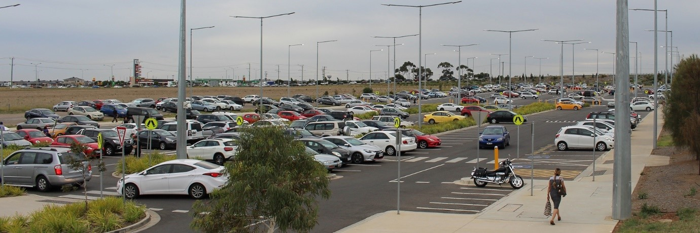
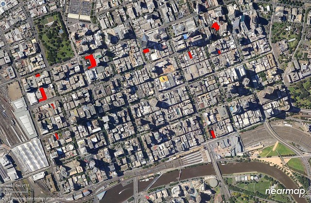

Overview
Topic
As a society, we are constantly developing and growing in many ways. Specifically, our population. With just over 6.680 million people currently residing in Victoria alone, it is no wonder we are such a busy city. Consequently, we face many problems but, one of the most ongoing and ‘annoying’ for most people is parking! Yes, this is a constant hassle, whether it be for a quick trip to pick up groceries or a needed spot to go to university, it is truly a prominent problem that most drivers face. Hence, Pie9 has analysed and researched into possible solutions to counteract this situation.
From what has been collated, Pie9 has deemed that the development of a parking application that enables a user to book a spot at a desired parking lot will yield the best possible outcome to this problem we face.
 Figure 1: Melbourne’s station parking problem, Daniel Bowen, photograph, viewed 18 May 2021, <https://www.danielbowen.com/2018/11/02/station-parking-problem/>In this project, Pie9 has proposed to develop a prototype application that will allow the user to select a parking lot, search for parking spot availability at this spot and book a spot if desired. The application will then be able to then send a signal to the indicated parking lot and with the support of in-ground and overhead sensors, the spot will be booked for the customer. The status of the booking system will be displayed by the application but also by the system in the parking complex. In comparison to other systems, Pie9 has proposed to implement not only the overhead and in-ground sensors but also, the use of in-ground retractable bollards. These bollards will not only function as an indicator but as a safety net to ensure unbooked users do not take another user’s spot. Once arrived at the spot, the user can then signal through the application that they have arrived, triggering the bollard to retract back. Further to that, some parking complexes require payment for parking. Like most applications, the user will be able to make payment by entering in payment details to do so on the users account. This will help to eliminate the mad scramble we all face when trying to find a parking spot at the shopping centres or at events.
To demonstrate this, Pie9 will also develop a miniature of a parking spot that will display how the parking application will function and how the technology that will be required will function and interact with this system. The miniature will use a simple Arduino breadboard, LDR/photoresistor and LED lights to show a mock-up version of the technology that would be required for our project on a larger scale. The miniature will be designed to represent a slice of a parking lot with the LDR embedded in the ground (acting as the in-ground sensor technology) and the LED will be mounted above (acting as the overhead sensor technology) and both will work in conjunction to show when a spot has been booked and consequently, when it is not vacant. The use of painted wooden sticks with a ‘push and pull’ tag attached will imitate the function of retractable in-ground bollards to demonstrate the level of control this system desires.
In conjunction with each other, we will demonstrate the complete system by a user using the application, designed, and developed in Figma, to request to make a booking at a parking lot by inputting the details needed, such as location, level of parking, type of parking spot required (disabled parking, pram parking, etc), payment details (if required) and more. This information will then be relayed to the parking complex and the spot that was selected will now be booked as indicated by the overhead sensors (green LED now turning red). In addition, to demonstrate the function of the in-ground sensors, Pie9 will also show a situation of a car spot being already occupied/booked and not occupied/not booked and how it will impact the application and the overhead sensors and retractable bollards. Overall, this application and miniature will validate the proposed venture of our project and how it will help to improve the current parking situation.
Motivation
The inspiration for such an idea was drawn from the fact that our phone is such a powerful tool and provides a plethora of resources at the touch of a few buttons. Especially after the COVID-19 situation, many services, such as food, entertainment, and retail, became more reliant on booking systems as this method is effective and efficient regarding customer wants and needs Now there are other parking apps present that have such functions, but none have truly accomplished a booking system for parking that is reliant and diverse as most can agree. For example, whenever you enter a large shopping complex and try to find parking, you will notice the overhead indicator sensors well indicate whether a parking spot is free. For some reason though, you get there and to your surprise, there is a vehicle parked in there! It can be frustrating and hence, having the ability to have an app in conjunction with an overhead and in-ground sensor, that can indicate reliably whether a parking spot is vacant or not will be revolutionary as it reduces the opportunity for road rage, congestion in parking lots and most of all, provides a fast and efficient service for users. This is due to the fact that the improved system will mean that drivers will be more organised when it comes to their travel plans as they now possess, at their convenience, the ability to observe and make bookings for a parking system. As such, the stress factors of finding parking for motorists, law enforcers and councils are alleviated due to more parking spots being readily available for users.
 Figure 2: How much ground level parking is there in Melbourne’s CBD?, Daniel Bowen, photograph, viewed 18 May 2021 <https://www.danielbowen.com/2012/01/07/melb-cbd-surface-parking/>The system is most important for the integration of benefits it will have on daily life. With technology constantly developing at a rapid rate, the future generations are always striving to develop new and innovative ways to make life easier. This booking system is no exception as it makes a common struggle become effortless through the means of organisation and awareness. Having the ability to do such at a push f a few buttons is a common demand for the current IT world as it provides what all IT advancements desire to do, to be an effective and efficient system while retaining convenience and ease of use for the users.
Furthermore, this project will demonstrate to any employer the time management, innovation, analysis skills and solution-oriented mindset that is needed to prosper in the IT industry. Possessing the sheer determination to keep on pressing onwards is what any employers desire in their employees as they are able to get to the job done reliably in a creative manner. Needless to say, this is a crucial trait to ensure you are successful in your position.
Landscape
Figure 3: Parkalot, photograph, viewed 19 May 2021, < https://parkalot.io/>During the creation of the application and miniature, Pie9 first observed and analysed similar products/services that were available to the users. Subsequently, we found that companies such as Parkalot, Secure Parking and Wilson Parking are the competitors in this field offering a similar service of car park booking. With the Secure Parking and Wilson Parking (both very large companies in the parking industry), these companies seek to reduce the congestion that parking can create. Since these companies are spread all over, this will greatly improve the use of their car parks by enticing users to an ease to use parking spot.
Figure 4: Wilson Parking, photograph, viewed 19 May 2021, <https://www.wilsonparking.com.au/find-a-park>While the Secure Parking and Wilson Parking are established companies/parking complexes, the Parkalot application allows individuals or corporations to create their own parking management system. This is accomplished by allowing the manager to assign spots to the intended users and hence, establish their own personal parking spot that they are allowed to park in. From this, the user can use the Parkalot app to book for their parking. Unlike the approach of the Wilson and Secure Parking applications, the parking complex is not apart of a parking branch and evidently, this system allows the user to create a more tailored service that will essentially be done at the user’s discretion.
Figure 5: Secure Parking, photograph, viewed 19 May 2021 <https://www.secureparking.com.au/en-au/>Compared to the mentioned applications, Pie9 is proposing a booking system but it will be in conjunction with the overhead and in-ground sensors to achieve more reliable ‘security’ when booking a spot. This application will also be aimed towards shopping centres, university campuses, local malls, event heavy areas and other non-established parking complexes as they will benefit from our system the most. By having the use of a booking system, this provides an initial enforcement on reduced parking time and frustration for users. The implementations of the sensors and the bollards is the second layer of reinforcement to ensure the first system is not compromised by potential people who may not use the booking system and consequently, guarantee the spots booked stay vacant for those patrons.